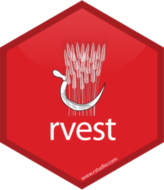

html <- rvest::read_html("https://www.zakvarty.com/professional/teaching.html")5 Web Scraping
Note
Effective Data Science is still a work-in-progress. This chapter is largely complete and just needs final proof reading.
If you would like to contribute to the development of EDS, you may do so at https://github.com/zakvarty/data_science_notes.
5.1 Scraping webpage data using {rvest}

You can’t always rely on tidy, tabular data to land on your desk. Sometimes you are going to have to go out and gather data for yourself.
I’m not suggesting you will need to do this manually, but you will likely need to get data from the internet that’s been made publicly or privately available to you.
This might be information from a webpage that you gather yourself, or data shared with you by a collaborator using an API.
In this chapter we will cover the basics of scraping webpages, following the vignette for the {rvest} package.
5.2 What is a webpage?
Before we can even hope to get data from a webpage, we first need to understand what a webpage is.
Webpages are written in a similar way to LaTeX: the content and styling of webpages are handled separately and are coded using plain text files.
In fact, websites go one step further than LaTeX. The content and styling of websites are written in different files and in different languages. HTML (HyperText Markup Language) is used to write the content and then CSS (Cascading Style Sheets) are used to control the appearance of that content when it’s displayed to the user.
5.3 HTML
A basic HTML page with no styling applied might look something like this:
<html>
<head>
<title>Page title</title>
</head>
<body>
<h1 id='first'>A level 1 heading</h1>
<p>Hello World!</p>
<p>Here is some plain text & <b>some bold text.</b></p>
<img src='myimg.png' width='100' height='100'>
</body>5.3.1 HTML elements
Just like XML data files, HTML has a hierarchical structure. This structure is crafted using HTML elements. Each HTML element is made up of of a start tag, optional attributes, an end tag.
We can see each of these in the first level header, where <h1> is the opening tag, id='first' is an additional attribute and </h1> is the closing tag. Everything between the opening and closing tag are the contents of that element. There are also some special elements that consist of only a single tag and its optional attributes. An example of this is the <img> tag.
Since < and > are used for start and end tags, you can’t write them directly in an HTML document. Instead, you have to use escape characters. This sounds fancy, but it’s just an alternative way to write characters that serve some special function within a language.
You can write greater than > and less than as <. You might notice that those escapes use an ampersand (&). This means that if you want a literal ampersand on your webpage, you have to escape too using &.
There are a wide range of possible HTML tags and escapes. We’ll cover the most common tags in this lecture and you don’t need to worry about escapes too much because rvest will automatically handle them for you.
5.3.2 Important HTML Elements
In all, there are in excess of 100 HTML elements. The most important ones for you to know about are:
The
<html>element, that must enclose every HTML page. The<html>element must have two child elements within it. The<head>element contains metadata about the document, like the page title that is shown in the browser tab and the CSS style sheet that should be applied. The<body>element then contains all of the content that you see in the browser.Block elements are used to give structure to the page. These are elements like headings, sub-headings and so on from
<h1>all the way down to<h6>. This category also contains paragraph elements<p>, ordered lists<ol>unordered lists<ul>.Finally, inline tags like
<b>for bold,<i>for italics, and<a>for hyperlinks are used to format text inside block elements.
When you come across a tag that you’ve never seen before, you can find out what it does with just a little bit of googling. A good resource here is the MDN Web Docs which are produced by Mozilla, the company that makes the Firefox web browser. The W3schools website is another great resource for web development and coding resources more generally.
5.4 HTML Attributes
We’ve seen one example of a header with an additional attribute. More generally, all tags can have named attributes. These attributes are contained within the opening tag and look something like:
<tag attribute1='value1' attribute2='value2'>element contents</tag>Two of the most important attributes are id and class. These attributes are used in conjunction with the CSS file to control the visual appearance of the page. These are often very useful to identify the elements that you are interested in when scraping data off a page.
5.5 CSS Selectors
The Cascading Style Sheet is used to describe how your HTML content will be displayed. To do this, CSS has it’s own system for selecting elements of a webpage, called CSS selectors.
CSS selectors define patterns for locating the HTML elements that a particular style should be applied to. A happy side-effect of this is that they can sometimes be very useful for scraping, because they provide a concise way of describing which elements you want to extract.
CSS Selectors can work on the level of an element type, a class, or a tag and these can be used in a nested (or cascading) way.
The
pselector will select all paragraph<p>elements.The
.titleselector will select all elements with class“title”.The
p.specialselector will select all<p>elements with class“special”.The
#titleselector will select the element with the id attribute“title”.
When you want to select a single element id attributes are particularly useful because that must be unique within a html document. Unfortunately, this is only helpful if the developer added an id attribute to the element(s) you want to scrape!
If you want to learn more CSS selectors I recommend starting with the fun CSS diner tutorial to build a base of knowledge and then using the W3schools resources as a reference to explore more webpages in the wild.
5.6 Which Attributes and Selectors Do You Need?
To scrape data from a webpage, you first have to identify the tag and attribute combinations that you are interested in gathering.
To find your elements of interest, you have three options. These go from hardest to easiest but also from most to least robust.
- right click + “inspect page source” (F12)
- right click + “inspect”
- Rvest Selector Gadget (very useful but fallible)
Inspecting the source of some familiar websites can be a useful way to get your head around these concepts. Beware though that sophisticated webpages can be quite intimidating. A good place to start is with simpler, static websites such as personal websites, rather than the dynamic webpages of online retailers or social media platforms.
5.7 Reading HTML with {rvest}
With rvest, reading a html page can be as simple as loading in tabular data.
The class of the resulting object is an xml_document. This type of object is from the low-level package xml2, which allows you to read xml files into R.
class(html)
#> [1] "xml_document" "xml_node"We can see that this object is split into several components: first is some metadata on the type of document we have scraped, followed by the head and then the body of that html document.
html
#> {html_document}
#> <html xmlns="http://www.w3.org/1999/xhtml" lang="en" xml:lang="en">
#> [1] <head>\n<meta http-equiv="Content-Type" content="text/html; charset=UT ...
#> [2] <body class="nav-fixed">\n\n<div id="quarto-search-results"></div>\n ...We have several possible approaches to extracting information from this document.
5.8 Extracting HTML elements
In rvest you can extract a single element with html_element(), or all matching elements with html_elements(). Both functions take a document object and one or more CSS selectors as inputs.
library(rvest)
html %>% html_elements("h1")
#> {xml_nodeset (1)}
#> [1] <h1>Teaching</h1>
html %>% html_elements("h2")
#> {xml_nodeset (2)}
#> [1] <h2 id="toc-title">On this page</h2>
#> [2] <h2 class="anchored" data-anchor-id="course-history">Course History</h2>
html %>% html_elements("p")
#> {xml_nodeset (7)}
#> [1] <p>I am fortunate to have had the opportunity to teach in a variety of ...
#> [2] <p>Developing and teaching a number of modules in statistics, data sci ...
#> [3] <p>Supervising undergraduate, postgraduate and doctoral research proje ...
#> [4] <p>Adapting and leading short courses on scientific writing and commun ...
#> [5] <p>Running workshops and computer labs for undergraduate and postgradu ...
#> [6] <p>Speaking at univerisity open days and providing one-to-one tuition ...
#> [7] <p>I am an associate fellow of the Higher Education Academy, which you ...You can also combine and nest these selectors. For example you might want to extract all links that are within paragraphs and all second level headers.
html %>% html_elements("p a,h2")
#> {xml_nodeset (3)}
#> [1] <h2 id="toc-title">On this page</h2>
#> [2] <a href="https://www.advance-he.ac.uk/fellowship/associate-fellowship" ...
#> [3] <h2 class="anchored" data-anchor-id="course-history">Course History</h2>5.9 Extracting Data From HTML Elements
Now that we’ve got the elements we care about extracted from the complete document. But how do we get the data we need out of those elements?
You’ll usually get the data from either the contents of the HTML element or else from one of it’s attributes. If you’re really lucky, the data you need will already be formatted for you as a HTML table or list.
5.9.1 Extracting text
The functions rvest::html_text() and rvest::html_text2() can be used to extract the plain text contents of an HTML element.
html %>%
html_elements("#teaching li") %>%
html_text2()
#> [1] "Developing and teaching a number of modules in statistics, data science and data ethics. These were predominantly at the postgradute-level and include courses designed for in-person and remote learning."
#> [2] "Supervising undergraduate, postgraduate and doctoral research projects."
#> [3] "Adapting and leading short courses on scientific writing and communication."
#> [4] "Running workshops and computer labs for undergraduate and postgraduate modules."
#> [5] "Speaking at univerisity open days and providing one-to-one tuition to high school students."The difference between html_text() and html_text2() is in how they handle whitespace. In HTML whitespace and line breaks have very little influence over how the code is interpreted by the computer (this is similar to R but very different from Python). html_text() will extract the text as it is in the raw html, while html_text2() will do its best to extract the text in a way that gives you something similar to what you’d see in the browser.
5.9.2 Extracting Attributes
Attributes are also used to record information that you might like to collect. For example, the destination of links are stored in the href attribute and the source of images is stored in the src attribute.
As an example of this, consider trying to extract the twitter link from the icon in the page footer. This is quite tricky to locate in the html source, so I used the Selector Gadget to help find the correct combination of elements.
html %>% html_element(".compact:nth-child(1) .nav-link")
#> {html_node}
#> <a class="nav-link" href="https://www.twitter.com/zakvarty">
#> [1] <i class="bi bi-twitter" role="img">\n</i>To extract the href attribute from the scraped element, we use the rvest::html_attr() function.
html %>%
html_elements(".compact:nth-child(1) .nav-link") %>%
html_attr("href")
#> [1] "https://www.twitter.com/zakvarty"Note: rvest::html_attr() will always return a character string (or list of character strings). If you are extracting an attribute that describes a quantity, such as the width of an image, you’ll need to convert this from a string to your required data type. For example, of the width is measures in pixels you might use as.integer().
5.9.3 Extracting tables
HTML tables are composed in a similar, nested manner to LaTeX tables.
There are four main elements to know about that make up an HTML table:
-
<table>, -
<tr>(table row), -
<th>(table heading), -
<td>(table data).
Here’s our simple example data, formatted as an HTML table:
html_2 <- minimal_html("
<table>
<tr>
<th>Name</th>
<th>Number</th>
</tr>
<tr>
<td>A</td>
<td>1</td>
</tr>
<tr>
<td>B</td>
<td>2</td>
</tr>
<tr>
<td>C</td>
<td>3</td>
</tr>
</table>
")Since tables are a common way to store data, rvest includes a useful function html_table() that converts directly from an HTML table into a tibble.
html_2 %>%
html_element("table") %>%
html_table()
#> # A tibble: 3 × 2
#> Name Number
#> <chr> <int>
#> 1 A 1
#> 2 B 2
#> 3 C 3Applying this to our real scraped data we can easily extract the table of taught courses.
html %>%
html_element("table") %>%
html_table()
#> # A tibble: 31 × 3
#> Year Course Role
#> <chr> <chr> <chr>
#> 1 "2022-23" Data Science Lecturer
#> 2 "" Ethics in Data Science I, II and III Lecturer
#> 3 "" Data Ethics for Digital Chemistry Lecturer
#> 4 "" Y1 research projects: point process models Lecturer
#> 5 "2021-22" Supervised Learning Lecturer
#> 6 "" Ethics in Data Science I Lecturer
#> # ℹ 25 more rows5.10 Tip for Building Tibbles
When scraping data from a webpage, your end-goal is typically going to be constructing a data.frame or a tibble.
If you are following our description of tidy data, you’ll want each row to correspond some repeated unit on the HTML page. In this case, you should
- Use
html_elements()to select the elements that contain each observation unit; - Use
html_element()to extract the variables from each of those observations.
Taking this approach guarantees that you’ll get the same number of values for each variable, because html_element() always returns the same number of outputs as inputs. This is vital when you have missing data - when not every observation unit has a value for every variable of interest.
As an example, consider this extract of text about the starwars dataset.
starwars_html <- minimal_html("
<ul>
<li><b>C-3PO</b> is a <i>droid</i> that weighs <span class='weight'>167 kg</span></li>
<li><b>R2-D2</b> is a <i>droid</i> that weighs <span class='weight'>96 kg</span></li>
<li><b>Yoda</b> weighs <span class='weight'>66 kg</span></li>
<li><b>R4-P17</b> is a <i>droid</i></li>
</ul>
")This is an unordered list where each list item corresponds to one observational unit (one character from the starwars universe). The name of the character is given in bold, the character species is specified in italics and the weight of the character is denoted by the .weight class. However, some characters have only a subset of these variables defined: for example Yoda has no species entry.
If we try to extract each element directly, our vectors of variable values are of different lengths. We don’t know where the missing values should be, so we can’t line them back up to make a tibble.
starwars_html %>% html_elements("b") %>% html_text2()
#> [1] "C-3PO" "R2-D2" "Yoda" "R4-P17"
starwars_html %>% html_elements("i") %>% html_text2()
#> [1] "droid" "droid" "droid"
starwars_html %>% html_elements(".weight") %>% html_text2()
#> [1] "167 kg" "96 kg" "66 kg"What we should do instead is start by extracting all of the list item elements using html_elements(). Once we have done this, we can then use html_element() to extract each variable for all characters. This will pad with NAs, so that we can collate them into a tibble.
starwars_characters <- starwars_html %>% html_elements("li")
starwars_characters %>% html_element("b") %>% html_text2()
#> [1] "C-3PO" "R2-D2" "Yoda" "R4-P17"
starwars_characters %>% html_element("i") %>% html_text2()
#> [1] "droid" "droid" NA "droid"
starwars_characters %>% html_element(".weight") %>% html_text2()
#> [1] "167 kg" "96 kg" "66 kg" NAtibble::tibble(
name = starwars_characters %>% html_element("b") %>% html_text2(),
species = starwars_characters %>% html_element("i") %>% html_text2(),
weight = starwars_characters %>% html_element(".weight") %>% html_text2()
)
#> # A tibble: 4 × 3
#> name species weight
#> <chr> <chr> <chr>
#> 1 C-3PO droid 167 kg
#> 2 R2-D2 droid 96 kg
#> 3 Yoda <NA> 66 kg
#> 4 R4-P17 droid <NA>5.11 Session Information
R version 4.2.2 (2022-10-31)
Platform: x86_64-apple-darwin17.0 (64-bit)
locale: en_US.UTF-8||en_US.UTF-8||en_US.UTF-8||C||en_US.UTF-8||en_US.UTF-8
attached base packages: stats, graphics, grDevices, datasets, utils, methods and base
other attached packages: rvest(v.1.0.3)
loaded via a namespace (and not attached): Rcpp(v.1.0.11), rstudioapi(v.0.15.0), knitr(v.1.43), xml2(v.1.3.5), magrittr(v.2.0.3), R6(v.2.5.1), rlang(v.1.1.1), fastmap(v.1.1.1), fansi(v.1.0.4), stringr(v.1.5.0), httr(v.1.4.6), tools(v.4.2.2), xfun(v.0.39), utf8(v.1.2.3), cli(v.3.6.1), selectr(v.0.4-2), htmltools(v.0.5.5), yaml(v.2.3.7), digest(v.0.6.33), tibble(v.3.2.1), lifecycle(v.1.0.3), htmlwidgets(v.1.6.2), vctrs(v.0.6.3), curl(v.5.0.1), glue(v.1.6.2), evaluate(v.0.21), rmarkdown(v.2.23), stringi(v.1.7.12), pander(v.0.6.5), pillar(v.1.9.0), compiler(v.4.2.2), jsonlite(v.1.8.7), renv(v.0.16.0) and pkgconfig(v.2.0.3)